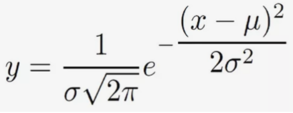
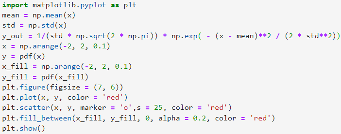
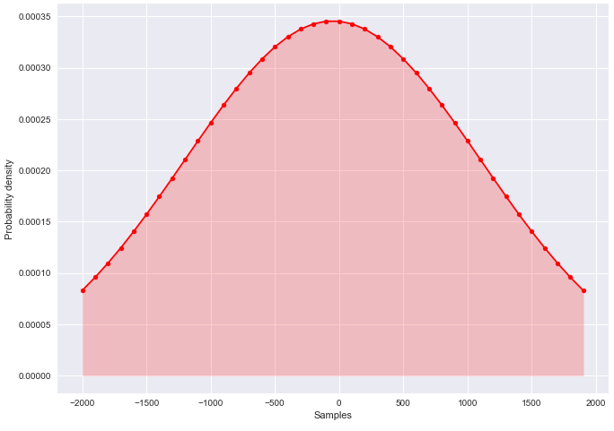

Jupyter lab - python.
The highlights of using jupyter lab for python
I started using Jupyter lab because while learning python in school, I wanted to go a step further and start learning to use other libraries such as numpy, matplotlib or pandas which are much easier to implement when using a notebook like jupyter..
JP Morgan have since introduced new staff requirements for all new investment bankers and managers: to go through a python programming course, unless they already know the theory. They do this because python is a means of aggregating large amounts of data quickly and easily allowing them to be represented in a simple graph. Python also allows of real time pulling of data in order for staff to get their finger on the pulse on which asset they might want to invest in. I believe that they are setting a precedence and other banks/firms will see how important programming knowledge is.
My first step in using matplotlib was to create basic graphs either linear or quadratic which could also help me in learning maths since I can easily create a graph using an equation or a set of points. I firstly made a simple linear graph which looked like this.

 The basic linear graph code
The basic linear graph code
After learning the absolute basics of matplotlib through courses on freecodecamp.org or random youtube videos that I had found, I learnt other graph styles and the ability to put them in rows , all in the same cell.
 Stacking different styles of graphs
Stacking different styles of graphs
Finishing matplotlib:
To finish off using matplotlib I decided to create a graph of bitcoin vs etherium price by reading into a csv file with all the data and plotting it like so:
 Reading the csv file into memory and showing the first five results of the database with .head()
Reading the csv file into memory and showing the first five results of the database with .head()
In order to create this into a graph after reading the contents of the csv file, I ran a 'for loop' to read all of the prices and put the values into lists to be plotted; after labelling axes and the lines the graph showed up with all of the results.

Making a bell curve in python:
Following my lessons on bell curves and my work at home on the Central Limit Theorem, I thought it would be interesting to learn how to program it. After all, it is much faster than using a pen and paper with a calulator.
Firstly we have to know the actual equation of a bell curve in order to program it into python. It looks and is complicated but with can put it into out program using the module "numpy" it is much easier since there are already presets for pi, exponentials and e which is Euler's number (shown as np.exp() where the number inside the bracket is the power of e, as shown in the equation above)
Here is the code for the bell curve: First you have to define the variables for the mean and standard deviation in order to crate a bell curve and then define the bell curve formula above. In order to make the points you use: np.arange(-2, 2, 0.1) which means draw a bell curve from the points -2 and 2, making a point every 0.1. In order to fill the bell curve's area underneath which I always like to draw, you have to use plt.fill_between and then the start and end points.
Here is the curve:
